Stub, the final set (MASCOT3)
Notes: ../mascot-3.md. All on the 64 grid of today's mascot; costumes on the 240 canvas of ../themes/.
Moods (logo.ts names + sorry)
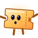
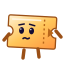
Small sizes: the full figure vs the ≤ 32 px cut
64px32px24px16px
64px32px24px16px
Games
Home art (Stub's usher torch is the light's source)
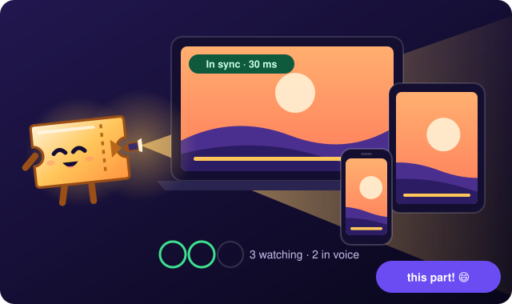
Theme costumes
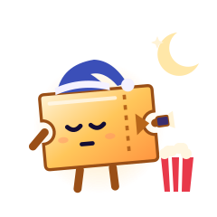
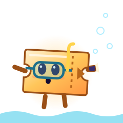
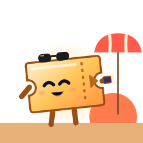
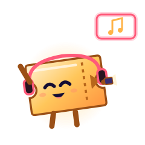
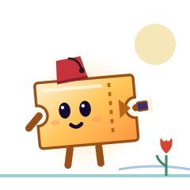
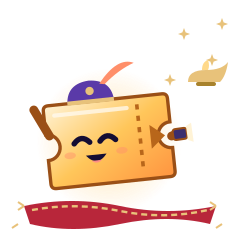
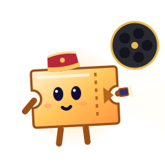
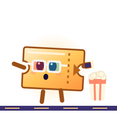
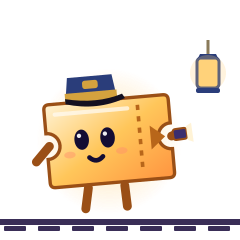
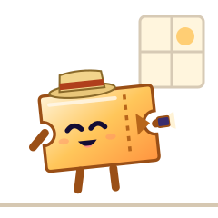